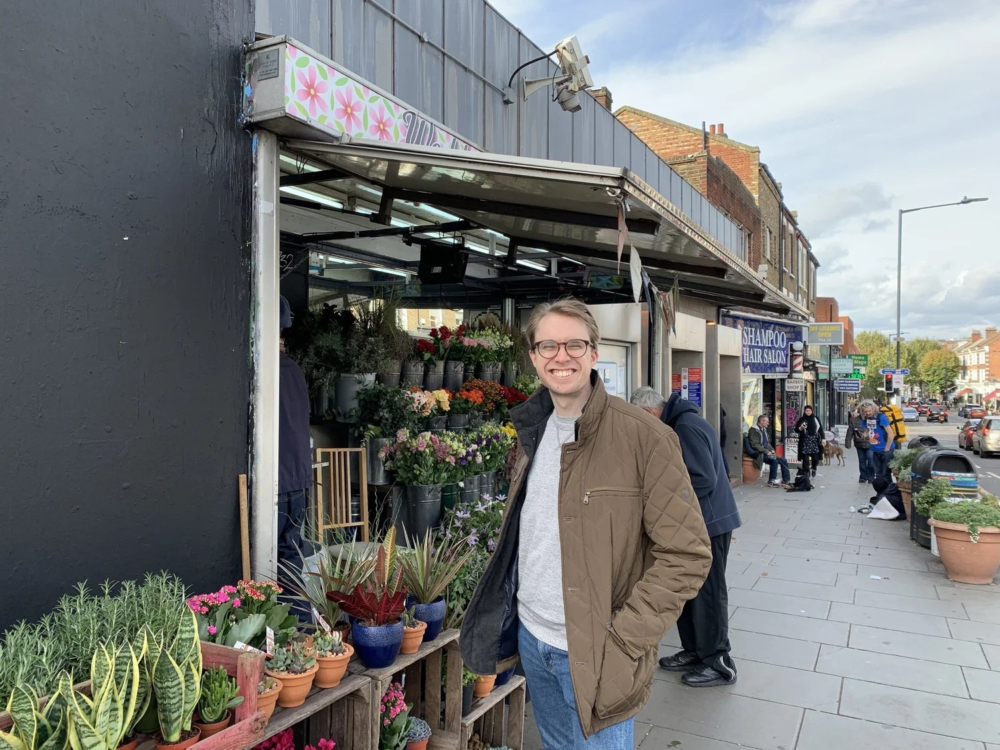
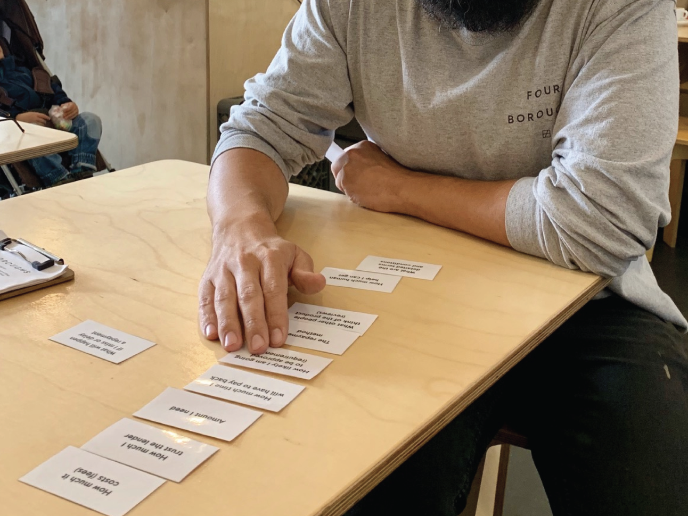
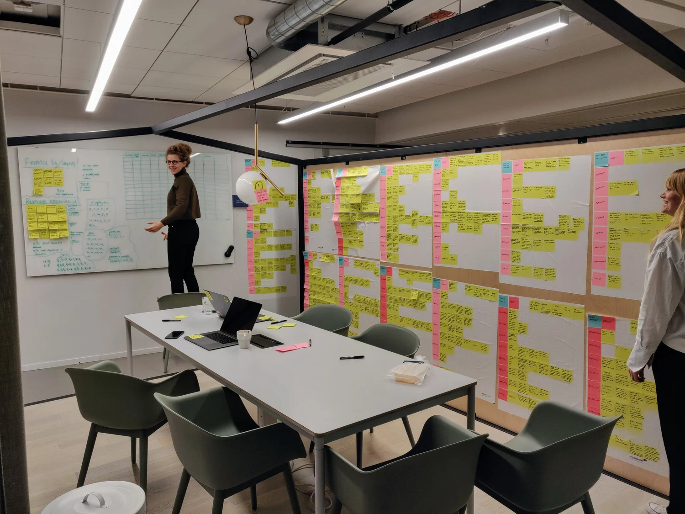

Case study, 2019
iZettle Advance: Customer journey
Mapping the Advance customer journey to close knowledge gaps, spot opportunities and shape the product's future vision and audience.
RoleSenior UX designer
TeamThree designers from the Capital team and a product manager
MethodInterviews in London with merchants eligible for Advance and customers who had taken one
Interviews
20
merchants and customers interviewed in London, on top of earlier research rounds.
The result
2020 roadmap
the journey became the foundation for the following year's roadmap.
The goal
Close knowledge gaps about Advance, spot opportunities and problem areas worth studying further, and help shape the product's future vision and target audience.
Process
Six steps from reading what we already knew to presenting the journey to the teams.
{{s.n}}
{{s.title}}
{{s.body}}
Research in action

Out meeting merchants
Card sorting with a merchant
Mapping the journey with Zettle expertsThe journey
From the need for money to paying off, with the activities and problems merchants told us about at every step.
Hello there! I am here to represent iZettle merchants and their need for funding.
Sometimes money is an opportunity and sometimes a problem solver, but frankly, there is hardly ever a time I do not need it.
I turn to Advance because I already know the product exists.
I become aware of Advance for the first time. I know nothing about it.
Notice that Financial planning, Explore funding options and Learn about the product can occur in any order, and that the first two can occur before knowing of Advance.
{{n.t}}
{{n.t}}
{{h.t}}
Description
{{c.desc}}
Activities
{{c.act}}
Problems
{{c.prob}}
Impact
Interviewed 20 merchants and customers in London.
A journey map that gave the team a shared picture of Advance.
The foundation for the following year's (2020) roadmap.